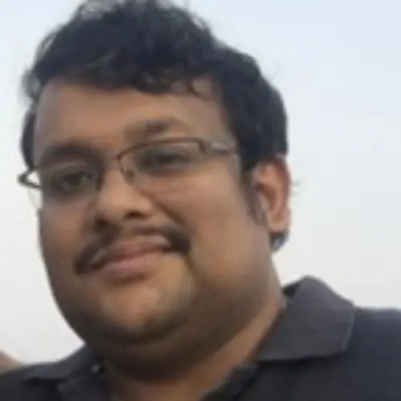

India member
Somsubhra Chakraborty
Name: Somsubhra Chakraborty Highest qualification and awarding university PhD, Louisiana State University Designation Assistant Professor Employer Indian Institute of Technology Kharagpur Contact details: Email: WhatsApp number/Mobile number somsubhra@agfe.iitkgp.ac.in +918670…
Published 5 July 2022 · Updated 7 April 2025

| Name: | Somsubhra Chakraborty |
| Highest qualification and awarding university | PhD, Louisiana State University |
| Designation | Assistant Professor |
| Employer | Indian Institute of Technology Kharagpur |
Contact details:
|
|
| somsubhra@agfe.iitkgp.ac.in | |
| +918670125707 | |
| Home page link on your employer web site if available | http://www.iitkgp.ac.in/department/AG/faculty/ag-somsubhra |
| Key areas of interest | Soil science, soil and water pollution characterization via proximal and cost-effective sensors |
| Web links for your research profile on Google scholar; ORCID or ResearchGate (if available); only one of them please. | Google Scholar:
https://scholar.google.com/citations?user=AkE_7XAAAAAJ&hl=en |
Somsubhra Chakraborty, a Louisiana State University (USA) alumnus is presently the faculty member in the Agricultural and Food Engineering Department at the Indian Institute of Technology Kharagpur, India. He has worked as a Post-Doctoral Research Fellow at West Virginia University, USA. His research areas include portable proximal sensor-based soil and water characterization, digital soil mapping, mobile image-based soil analysis, and app development. Dr. Chakraborty has developed a patented methodology for combining multiple proximal soil sensors to improve the predictive accuracy relative to the individual technique in isolation on the analyte of interest (US patent US-2017-0122889-A1) titled “Portable Apparatus for Soil Chemical Characterization”. He has on-going collaborations with scientists from several countries including the USA, Canada, Romania, Brazil, China, and Morocco. He has received the Australia Awards Fellowship (2016) and Shastri Scholar Travel Subsidy Grant (2019-20). With more than 50 peer-reviewed publications in reputed international journals, Dr. Chakraborty has an h-index of 22 and i10 index of 37. He is an editorial board member of Geoderma (Elsevier), the global journal of soil science. He is currently supervising four Ph.D. students and leading several research projects.
Research Project
- Rapid Assessment of Soil Arsenic, Cadmium and Lead Pollution in Peri-urban Agricultural Fields via Portable X-Ray Fluorescence Spectrometry and Machine Learning. DST-SERB, Govt. of India
- Rapid Assessment of Soil Arsenic and Lead Pollution Risks Via PXRF Based Spectral Modeling. ISIRD, IIT Kgp.
Key Publications/Reports
- Chakraborty, S., B. Li, D.C. Weindorf, and C.L.S. Morgan . 2019. External parameter orthogonalisation of Eastern European VisNIR-DRS soil spectra. Geoderma 337:65-75.
- Chakraborty, S., B. Li, D.C. Weindorf, S. Deb, A. Acree, P. De, and P. Panda. 2019. Use of portable X-ray fluorescence spectrometry for classifying soils from different land use land cover systems in India. Geoderma 338:5-13.
- Pearson, D., D.C. Weindorf, S. Chakraborty, B. Li, J. Koch, P. Van Deventer, J. de Wet, and N. Yaw Kusi. 2018. Analysis of metal-laden water via portable X-ray fluorescence spectrometry. Journal of Hydrology 561:267-276.
- Chakraborty, S., D.C. Weindorf, C.A. Weindorf, B.S Das, B. Li, B. Duda, S. Pennington, and R. Ortiz. 2017. Semiquantitative evaluation of secondary carbonates via portable x-ray fluorescence spectrometry. Soil Science Society of America Journal. 81:844–852.
- Chakraborty, S., B. Li, S. Deb, S. Paul, D.C. Weindorf, and B.S. Das. 2017. Predicting soil arsenic pools by visible near infrared diffuse reflectance spectroscopy. Geoderma 296: 30-37.
- Chakraborty, S., D.C.Weindorf, S. Deb, B. Li, S. Paul, A. Choudhury, and D.P. Ray. 2017. Rapid assessment of regional soil arsenic pollution risk via diffuse reflectance spectroscopy. Geoderma 289: 72-81.
- Pearson, D., S. Chakraborty, B. Duda, B. Li, D.C. Weindorf, S. Deb, E. Brevik, and D.P. Ray. 2017. Water analysis via portable X-ray fluorescence spectrometry. Journal of Hydrology 544:172-179.
- Chakraborty, S., D.C. Weindorf, S. Paul, B. Ghosh, B. Li, M. N. Ali, R.K. Ghosh, D.P. Ray, and K. Majumdar. 2015. Diffuse Reflectance Spectroscopy for Monitoring Lead in Landfill Agricultural Soils of India. Geoderma Regional 5:77-85.
- Chakraborty, S., D.C. Weindorf, B. Li, Aldabaa, A.A.A., R.K. Ghosh, S. Paul, and N. Ali. 2015. Development of a hybrid proximal sensing method for rapid identification of petroleum contaminated soils. Science of the Total Environment 514:399-408.
- Zhu, Y. , D.C. Weindorf, S. Chakraborty, B. Haggard, and N. Bakr. 2010. Characterizing surface soil water with field portable diffuse reflectance spectroscopy. Journal of Hydrology 391: 133–140.